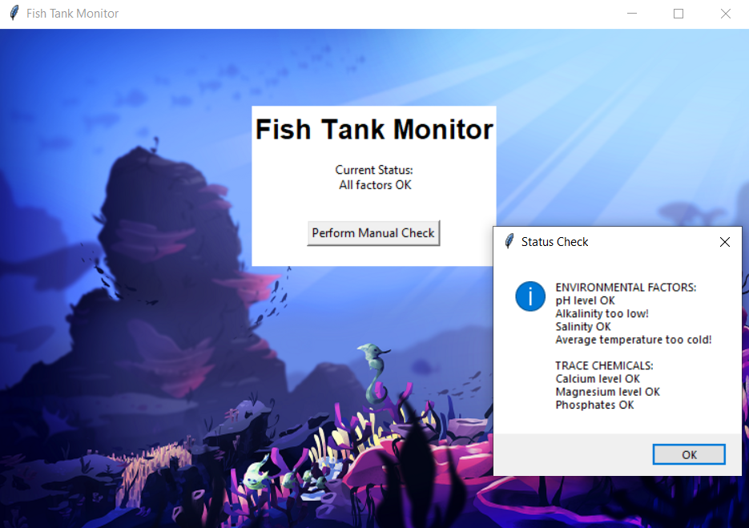
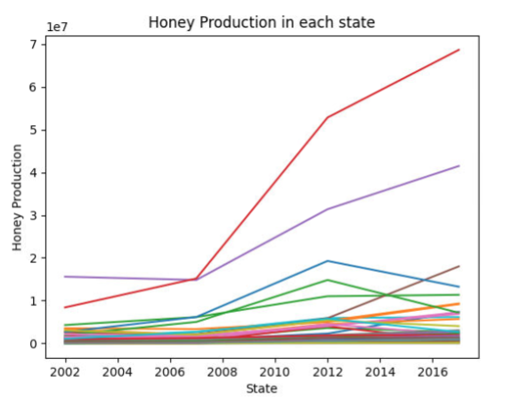
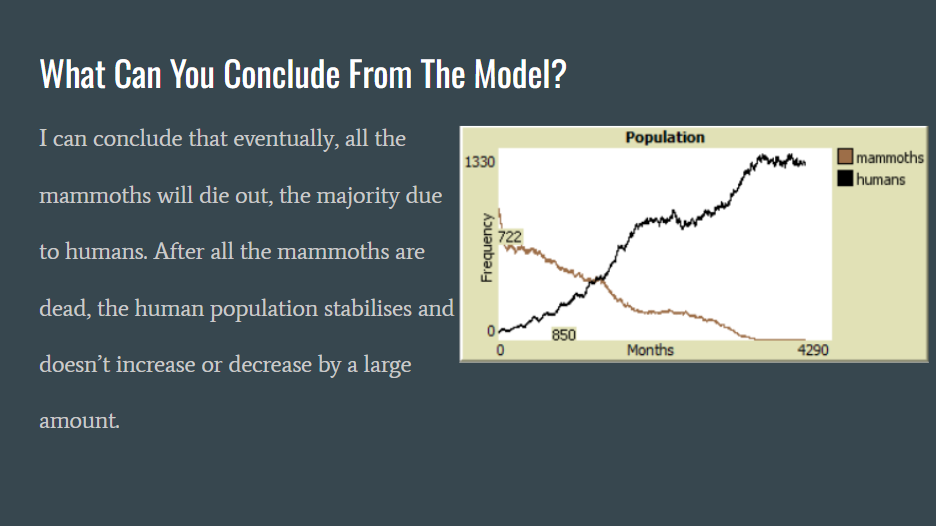

FISHING SIMULATOR (1.2.5)
 Fishing Simulator is a reflex clicker game in which fish swim quickly across the screen and players have to click to catch them within the given time limit.
Fishing Simulator is a reflex clicker game in which fish swim quickly across the screen and players have to click to catch them within the given time limit.
NOT STEEPLECHASE (SCRATCH) Not Steeplechase is a three-player racing game where players use either WASD, IJKL, or arrow keys to control their unicorn adjacent being.
PHISHY FISH TANK (2.1.6)  Phishy Fish Tank was a debugging project in which we were given a company's digital fishtank code and tasked to figure out why it was not working the way it was meant to. ROVER PHONE HOME (3.1.6) Rover Phone Home was a project in which we needed to analyze data and come to a conclusion on what region of an alien planet our rover was in. Based on the data, we came to the conclusion that the rover was in the Desert Plains. HONEY PRODUCTION (3.2.4)  Honey Production was a project which needed us to chart and evaluate data on honey production from USDA's site. SIMULATION INVESTIGATION (4.1.4)  The simulation investigation project was a project in which we used a mammoth vs. human population simulator to observe the effects that each population had on the other.